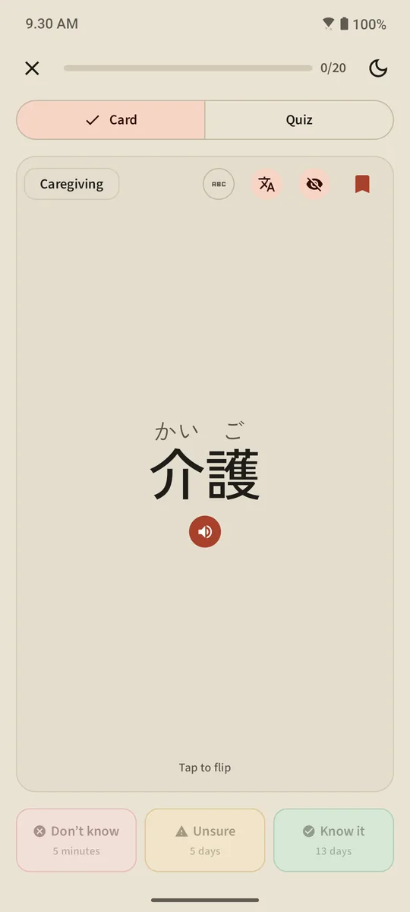
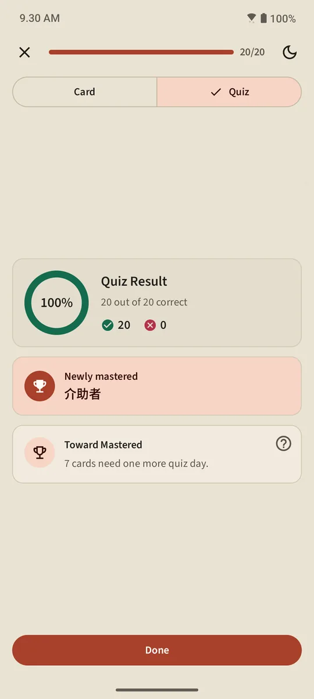
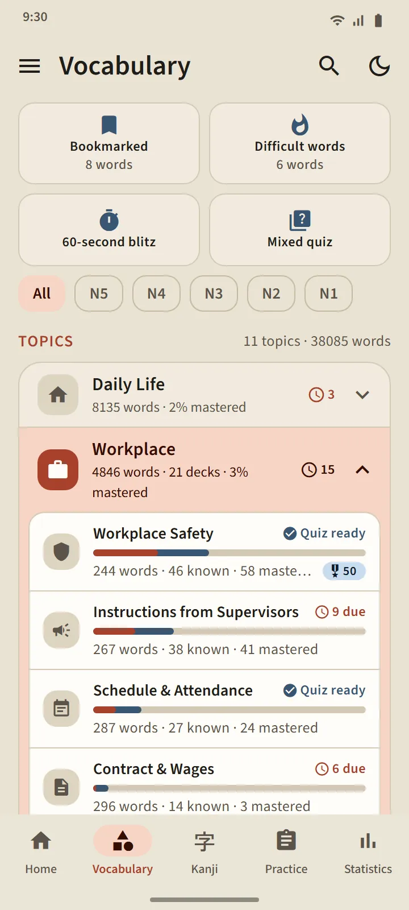
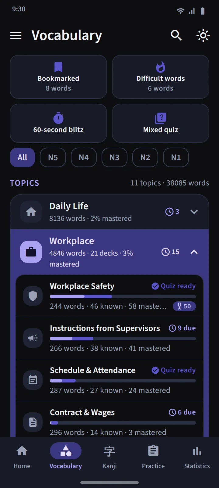
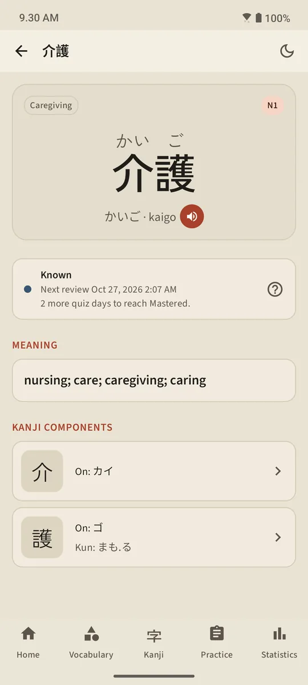

Cards that know when you are about to forget
The front of a card shows the word (with furigana if you want it). Tap to flip: reading, romaji, meaning and component kanji, plus a pronunciation button. Then rate yourself with one of three buttons.
Scheduling is done by FSRS, the same spaced-repetition algorithm used by modern flashcard apps. Each button shows when the word will come back: minutes, days or weeks later. The more often you answer Know it, the longer the gap.
- Don't know sends the word back to Learning from any stage.
- Unsure shortens its interval.
- Know it moves the word to Known and pushes the next review further out.


Four stages, and Mastered must be proven
Every word climbs four stages: New, Learning, Known, Mastered. Pressing Know it on a card only takes a word to Known. To reach Mastered you must answer it correctly in a quiz on three different days. Mastered words keep being tested when they fall due, and drop back if you get them wrong.
A deck's quiz opens once 20 of its words are Known or Mastered (smaller decks open as soon as all their words are known). Questions go both ways: word to meaning, and meaning to word. At the end you see the words newly mastered, the ones a step away, and the ones you got wrong.


Study by topic, track every word
The Vocabulary tab is divided into 11 groups, and each group holds small decks. The filter above narrows everything to one JLPT level. Every deck has its own screen: a percent-complete ring, the word list with each word's status, a Learning/Known/Mastered filter, and the Study and Quiz buttons.
The Workplace group holds 21 decks for candidates going to work in Japan: Workplace Safety, Instructions from Supervisors, Schedule & Attendance, Contract & Wages, Tools & Measuring Instruments, Logistics & Warehousing, Office & Documents, Food Manufacturing, Caregiving, Factory & Production, Industrial Machinery, Electronics & Electrical, Construction, Restaurant & Kitchen, Agriculture, Shipbuilding, Building Cleaning, Fishery, Automotive & Repair, Aviation & Airport, Hospitality. For life in Japan there are decks for transport, shopping and money, home and furniture, plus the Social & Administration and Body & Health groups.
| Group | Decks |
|---|---|
| Daily Life | 16 |
| Workplace | 21 |
| Social & Administration | 8 |
| Body & Health | 8 |
| Traits & Emotions | 8 |
| Word Classes | 5 |
| Technology & Media | 4 |
| Nature & Science | 10 |
| Academic & Opinion | 8 |
| Culture & Religion | 4 |
| Sports & Games | 3 |


Special decks and quick practice
Above the group list sit three decks that draw from every deck: Bookmarked (words you starred), Difficult (fills itself with words you keep forgetting on cards or missing in quizzes), and the 60-second Blitz (as many cards as fit in one minute). A fourth tile, Mixed quiz, tests Known and Mastered words from all decks at once.

A pocket dictionary of 38,085 words
The search icon in the header finds any word by kanji, kana, romaji or meaning. Results are ranked by how well they match, and romaji is matched with spelling tolerance: shinbun and shimbun, koohii and kōhī, arigato and arigatou all find the same word. Every word has a detail page: its stage and next review, meaning, component kanji with their readings, and a pronunciation button.


Levels and meaning languages
Word levels are an estimate: the Japan Foundation does not publish an official vocabulary list, so the mapping is built from the old JLPT lists and usage frequency. There is no separate "JFT" word level: JFT-Basic tests the same basic vocabulary as N5 and N4, plus workplace words.
Meanings are complete in English and Indonesian. Other languages cover every free word; words not yet translated are shown in English. The translation language can be chosen separately from the interface language in Settings.
| Level | Words | Free |
|---|---|---|
| N5 | 1,030 | 1,007 |
| N4 | 2,044 | 1,505 |
| N3 | 11,230 | 4,101 |
| N2 | 11,309 | 2,291 |
| N1 | 12,472 | 502 |